Tu red bajo control
El recorrido comercial de la plataforma, en dos minutos.
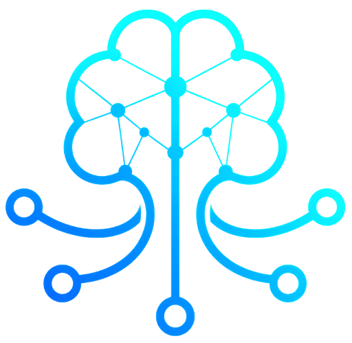
Oktavia Tu red bajo controlLa plataforma de automatización para redes multivendor. Descubre lo que hay en tu red, verifica que cumpla tu estándar y corrige lo que no cumple, con aprobación humana en cada cambio. Cisco, Fortinet y Juniper desde una sola consola.
Una plataforma, un asistente, un equipo que lo implementa
La plataforma
Descubre, audita, corrige y verifica sobre Cisco, Fortinet y Juniper. Cada ejecución deja artefacto descargable y cada cambio pasa por una persona.
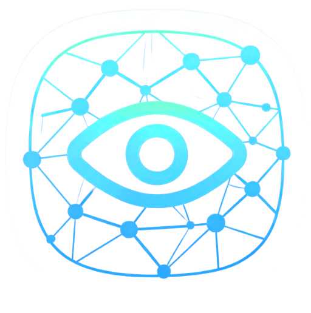
El asistente
ChatOps integrado en todas las pantallas de Oktavia. Responde con datos de la red y declara si consume IA antes de que pulses.
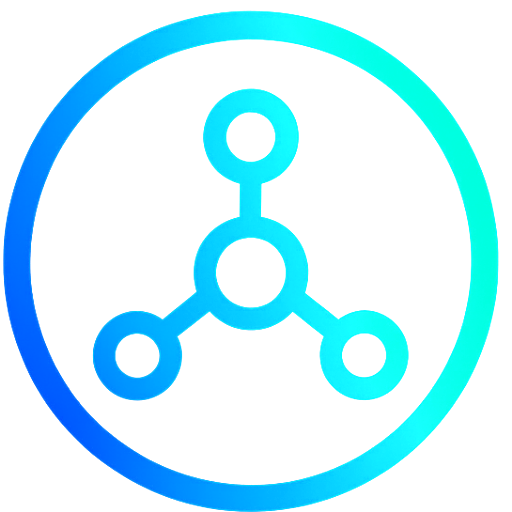
La implementación
Onboarding de datos, discovery controlado, línea base de intención y alta de servicios nuevos. La red queda operando, no sólo licenciada.
Multivendor en producción, y más fabricantes se integran por proyecto:
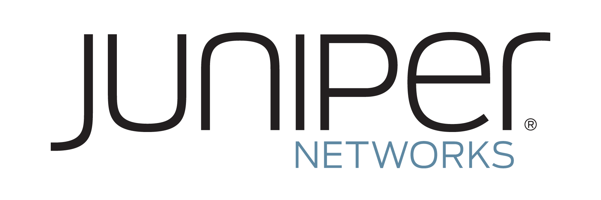
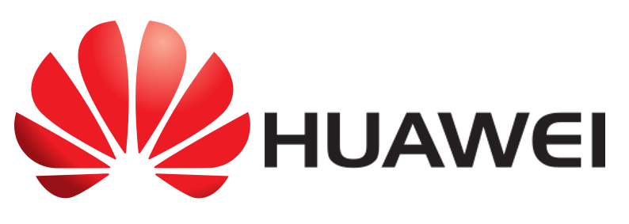
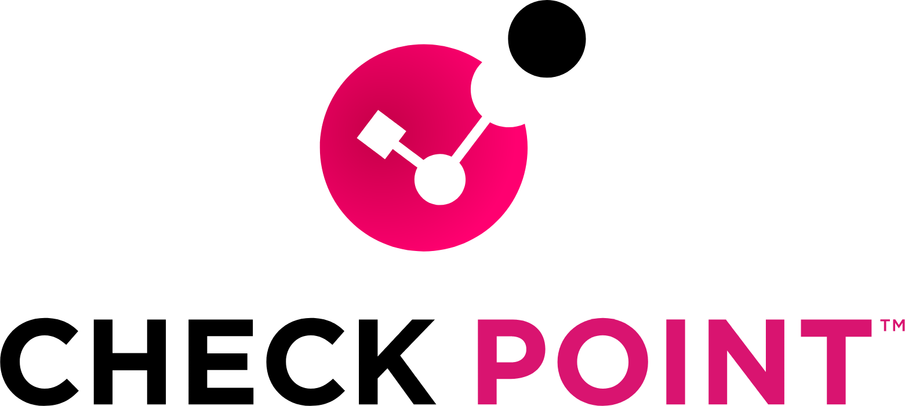
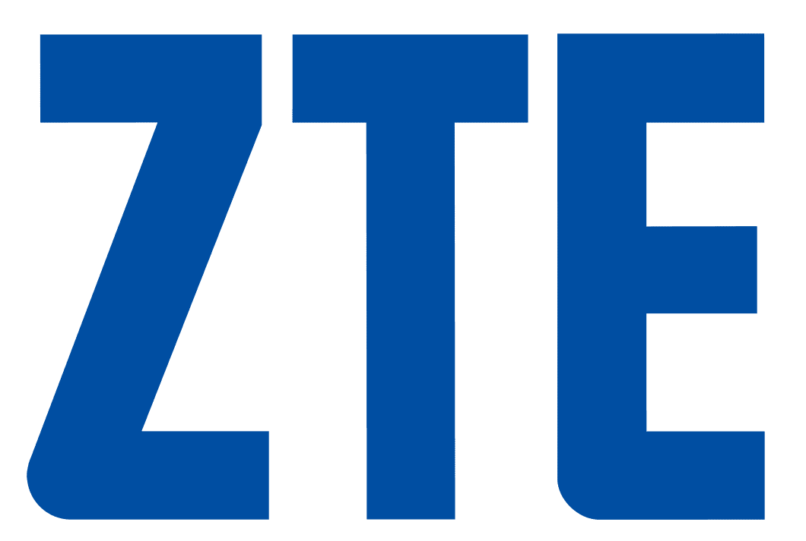
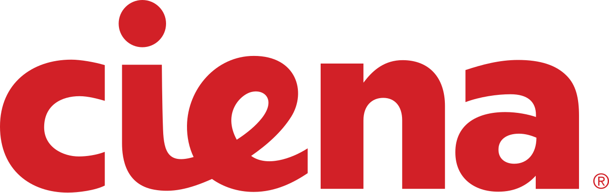
Oktavia · La plataforma
Oktavia integra descubrimiento multifabricante, cumplimiento por sitio, rol o dispositivo, configuración deseada, seguridad de red y remediación verificada en una sola consola. Argos, el asistente de ChatOps, atraviesa todos los módulos y declara en cada acción si consume el modelo de IA o si se resuelve de forma determinista.
Oktavia en video
Recorridos cortos por cada módulo, grabados sobre la plataforma real. El reproductor sólo se carga cuando pulsas, así que pasar por aquí no te rastrea.
El recorrido comercial de la plataforma, en dos minutos.
El panel principal: cumplimiento, dispositivos accesibles y actividad reciente.
Cómo se construye la fuente de verdad a partir de los equipos que ya tienes.
Equipos, sitios, roles y plataformas, con filtros y exportación.
La auditoría: qué falló, con qué severidad y qué líneas de configuración faltan.
El ciclo cerrado: proponer, aprobar, aplicar y verificar que el hallazgo cerró.
Capacidades de la plataforma
Recolecta y normaliza el estado de la red respetando el modelo de cada fabricante, en lugar de traducirlo todo a sintaxis Cisco.
Centraliza equipos, sitios, roles, plataformas y metadatos, con filtros y exportación para que todo el equipo trabaje sobre la misma base.
Mapa físico y de plano de control con LLDP, CDP, OSPF, BGP, STP y VRRP, más el camino real entre dos direcciones IP con ida y regreso.
Verifica la red contra reglas editables por sitio, rol o dispositivo, y entrega hallazgos con severidad y las líneas de configuración que faltan.
Genera la configuración desde plantillas y variables de servicio, con precedencia por sitio, plataforma, modelo, rol y equipo.
Auditar, proponer, revisar el diff, aprobar, aplicar y volver a auditar para confirmar que el hallazgo cerró. Con artefacto y vuelta atrás.
Túneles entre sitios, publicación de una red en OSPF y BGP, o DHCP por VLAN. Cada servicio se propone, se edita y trae su rollback.
Se le pregunta en lenguaje natural y responde con datos de la red. Cada acción declara antes de pulsarla si consume IA o si es determinista.
Postura calculada sobre la configuración real en cuatro dominios: perímetro, gestión, identidades y segmentación, con la evidencia de cada hallazgo.
Responde qué hay configurado en cada equipo y cuánto de eso está declarado como intención, para cerrar los puntos ciegos sin tocar la red.
Compara la configuración deseada contra la activa, detecta desvíos y sostiene el diff que se aprueba antes de cualquier cambio.
Qué política decide un flujo en cada salto, con su NAT y su registro. Si un objeto no se puede resolver lo dice, en vez de afirmar que bloquea.
Mapa de direccionamiento, subredes detectadas, solapamientos y la ubicación de una IP hasta el puerto de acceso cruzando ARP con la tabla MAC.
Salud de red, riesgo de configuración, desvíos, capacidad y puertos, en reportes descargables listos para auditoría.
Métricas en tiempo real y reglas que reaccionan solas ante caídas de BGP u OSPF y umbrales de CPU. Se licencia por separado.
El descubrimiento de red construye el inventario y la topología, que son la fuente de verdad. Sobre ella se declara la intención: lo que cada equipo debería tener configurado.

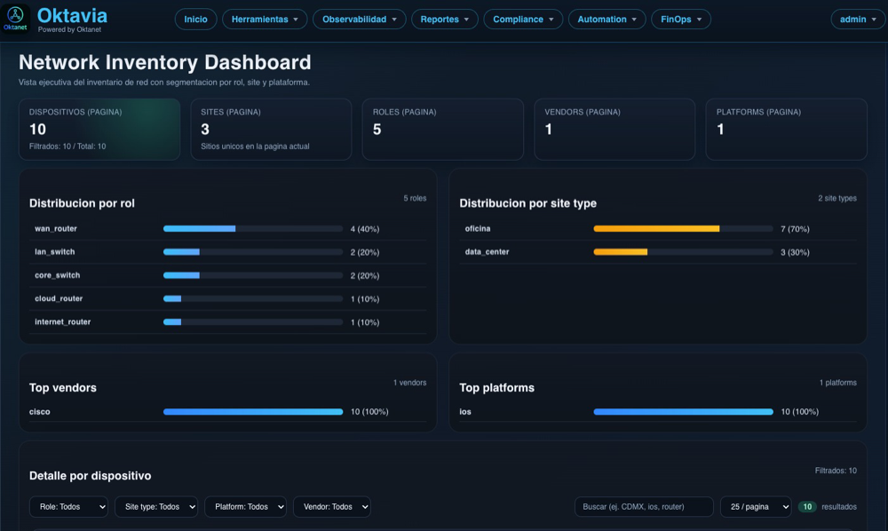
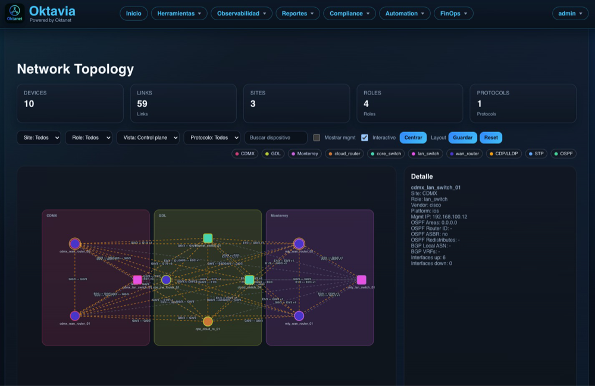
El camino habitual para declarar o editar un servicio es pedírselo a Argos, que propone el cambio conversando. El configurador sigue ahí para cuando prefieras hacerlo a mano.
Capacidades destacadas
Encontrar un problema no sirve si corregirlo sigue siendo manual, y aplicar un cambio a ciegas no sirve si nadie verifica que quedó bien. El mismo ciclo corrige desviaciones y da de alta servicios nuevos.
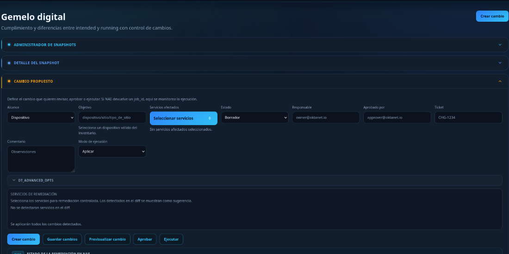
Auditar, proponer contra la intención declarada, revisar el diff en el Gemelo Digital, aprobar, aplicar con la primitiva segura del fabricante y volver a auditar para confirmar que cerró.
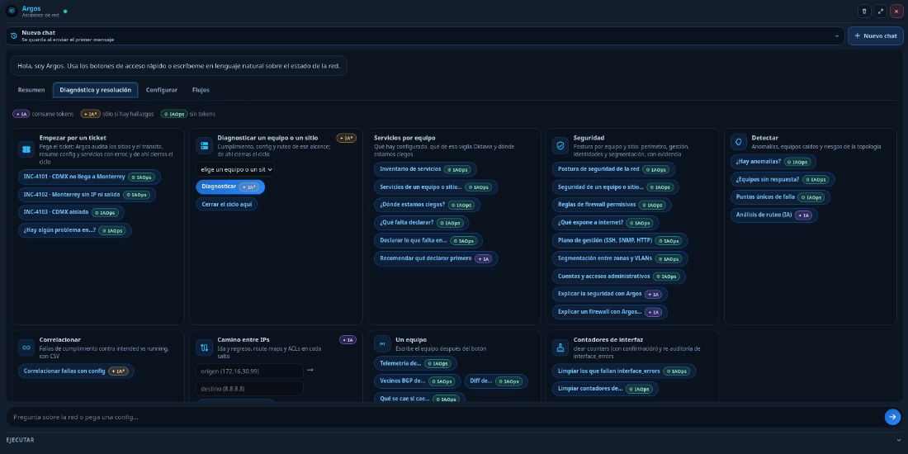
La mayoría de las consultas no consumen el modelo: son cálculos reproducibles sobre datos ya recolectados. Cada acción lleva su marca antes de pulsarla.
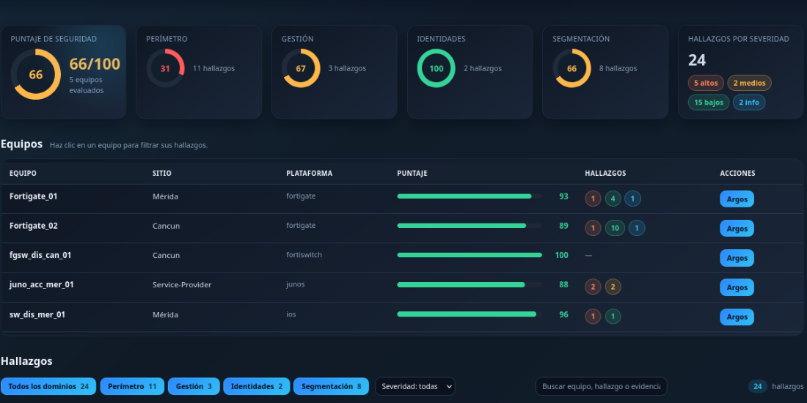
Puntaje por perímetro, gestión, identidades y segmentación, calculado sobre la configuración real. Cada hallazgo trae la línea que lo sustenta y su corrección en la sintaxis del fabricante.
Argos · ChatOps de red
Dos principios lo separan de un asistente genérico. Cada respuesta declara si consumió el modelo de IA o si se resolvió de forma determinista, así que el costo es visible antes de pulsar. Y ninguna acción que toque la red ocurre sin que una persona la apruebe.
Estado de la red, cumplimiento, qué atender primero y el diagnóstico de un equipo o un sitio, sin abrir otra pantalla.
El camino entre dos direcciones IP con ida y regreso, la correlación de fallas contra la configuración y los equipos que no responden.
Se describe el servicio en lenguaje natural o se pega la configuración, y Argos la propone como intención declarada para que la edites antes de aplicar.
Auditar, ver el cumplimiento, llevarlo al Gemelo Digital, aprobar y verificar. Cada paso es un botón, no una frase que haya que teclear.
La mayoría de lo que hace Argos no consume el modelo: son consultas y cálculos sobre datos ya recolectados, con resultado reproducible. El modelo entra cuando hay que redactar, priorizar o interpretar lenguaje libre, y nunca inventa hallazgos: trabaja con los que el cálculo produjo.
Modelo de ejecución
Recolectamos y normalizamos el estado de la red por sitio y dispositivo para construir una línea base confiable.
Ejecutamos pruebas contra reglas editables para identificar desvíos, priorizarlos por severidad y ubicar la evidencia de cada uno.
Generamos la configuración deseada y su diff contra lo activo, con artefactos versionables, antes de cualquier cambio en la red.
Una persona aprueba, Oktavia aplica con la primitiva segura del fabricante y vuelve a auditar para confirmar que el hallazgo cerró.
Casos de uso
Evalúa cumplimiento por sitio, rol o dispositivo en minutos, con evidencia exportable para auditoría o licitación.
Corrige una desviación de punta a punta: proponer, aprobar, aplicar y verificar que cerró, sin salir de la herramienta.
Levanta un túnel entre dos sitios con sus rutas, o publica una red nueva en OSPF y BGP con verificación por ping incluida.
Postura de firewalls y switches con la línea de configuración que sustenta cada hallazgo y la corrección en CLI del fabricante.
Traza el camino entre dos direcciones IP con ida y regreso, y qué política de firewall decide el flujo en cada salto.
Declara como intención la configuración que un equipo ya tiene, para empezar a auditarla sin rediseñar nada.
Impacto medible
Métricas de referencia en equipos que migran de procesos manuales a flujos controlados con artefactos.
menos tiempo en revisiones manuales de cumplimiento y configuración.
más visibilidad sobre desvíos de configuración por sitio, rol y dispositivo.
menos tareas repetitivas con tareas programadas y artefactos descargables.
capacidad de operación trazable 24/7 con validación y aprobación previa.
Servicios profesionales
Una plataforma de automatización no sirve si nadie carga el inventario, declara la intención y ajusta las reglas a cómo opera la red de verdad. Ese trabajo lo hacemos nosotros, contigo, hasta que tu equipo lo recorre solo.
Recibimos tu inventario, homologamos nombres, roles, sitios, plataformas y modelos, y lo cargamos con el formato que la plataforma espera.
Validamos alcanzabilidad, ejecutamos el descubrimiento por lotes, recolectamos respaldos y normalizamos el inventario observado.
Revisamos el estándar que ya tienes, lo declaramos como intención por alcance y activamos las verificaciones de cumplimiento que corresponden.
Corremos la auditoría completa, revisamos los tableros contigo y ajustamos reglas y excepciones hasta que el resultado refleje tu operación.
Diseñamos e implementamos servicios sobre la plataforma: túneles entre sitios, publicación de redes, DHCP por VLAN, cada uno con su rollback.
Acompañamos las primeras remediaciones y el ciclo completo hasta que tu equipo lo recorre solo, con las ventanas y aprobadores que ya usas.
Arquitectura y enfoque
Oktavia no busca reemplazar un NMS de monitoreo en tiempo real. Su foco es estandarizar descubrimiento, cumplimiento y configuración deseada, y cerrar el ciclo hasta la remediación verificada con un modelo de ejecución controlado y trazable.
La arquitectura separa la interfaz web y el motor de automatización para facilitar despliegues simples y evolución a servicios externos sin perder compatibilidad de API ni trazabilidad de artefactos.
Cada fabricante se integra con adaptador de descubrimiento, normalizador, reglas de cumplimiento y plantillas Jinja.
Prioriza remediación supervisada con aprobación, evitando automatizaciones opacas y no auditables.
Se despliega en tu infraestructura, el acceso entra por tu proveedor de identidad con Okta y segundo factor, y las credenciales van cifradas en reposo.
Oktavia Pro incluye la plataforma completa. La telemetría continua y la orquestación de eventos se licencian aparte por su perfil de consumo.
Licenciamiento
Oktavia Pro es la plataforma completa. La telemetría continua y el motor de eventos se licencian aparte porque almacenan series de tiempo y corren un evaluador permanente, y no toda red los necesita desde el día uno.
La plataforma completa. Todo lo necesario para descubrir la red, verificar que cumpla el estándar, corregir lo que no cumple y dar de alta servicios nuevos, con aprobación humana en cada cambio.
Se licencia aparte porque almacena series de tiempo y corre un evaluador permanente: tiene otro perfil de consumo. No toda red la necesita desde el primer día, y la que la necesita la suma cuando quiere.
Cotización
¿Quieres saber cuánto cuesta Oktavia? Solo necesitamos conocer el tamaño de tu red.
Tu tecnología debe adaptarse a tu presupuesto. No al revés.
Por eso ofrecemos esquemas comerciales flexibles, con opciones de pago mensual, anual o planes acordados durante la vigencia del contrato, a partir de 12 meses.
Empieza con la capacidad que necesitas hoy y evoluciona conforme crece tu operación.
No necesitas preparar un inventario detallado, arquitectura completa ni un largo proceso de levantamiento para recibir una primera propuesta.
Recursos
El documento reúne módulos, cobertura por fabricante, integraciones, licenciamiento y tiempos de implementación, y se puede leer en línea o descargar en PDF.
Dos páginas para decidir si Oktavia encaja: qué problema resuelve y para quién, los beneficios operativos con sus métricas de referencia, el modelo de dos licencias y los esquemas comerciales flexibles. Sin detalle de implementación.
El documento completo: los quince módulos con su alcance, las siete categorías de valor, cobertura y método de acceso por fabricante, integraciones con el ecosistema, arquitectura, requisitos de integración, el modelo de dos licencias, casos de uso y el proceso de implementación con sus tiempos estimados.
Conversemos
Comparte tu contexto técnico para diseñar un inicio rápido de descubrimiento, cumplimiento y configuración deseada en tu entorno actual.
Torre de Oficinas, Downtown Reforma
Ciudad de México
Cotización
Solo necesitamos conocer el tamaño de tu red: aproximadamente cuántos routers, switches, firewalls y controladoras administras.
Sin inventario detallado ni levantamiento previo. Esquemas de pago mensual, anual o acordados, desde 12 meses.
Ver el detalle comercial